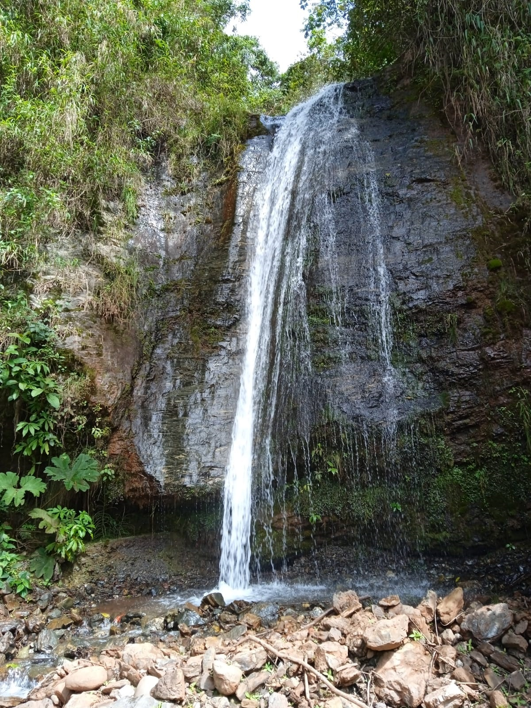
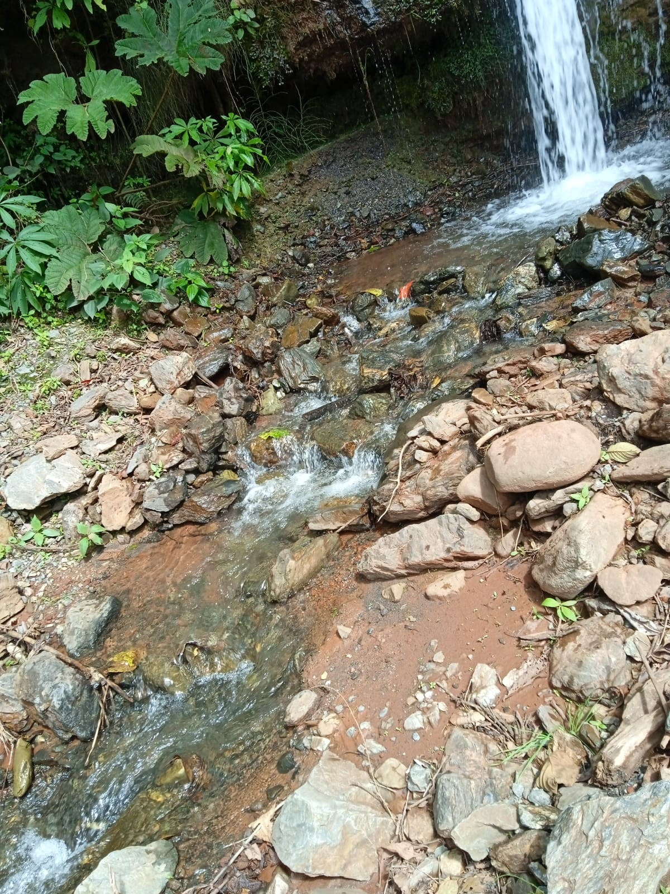

La reforestación es la Plantación de árboles donde ya existen con el fin de reforzar la densidad de la cobertura vegetal, Pretende recuperar la imagen y condiciones del paisaje del pasado, perdidas por la degradación de suelos debido a agentes naturales o humanos.
Cuenca hidrográfica: Es el espacio de territorio delimitado por la línea divisoria de las aguas, conformado por un sistema hídrico que conducen sus aguas a un río principal, a un río muy grande, a un lago o a un mar. Este es un ámbito tridimensional que integra las interacciones entre la cobertura sobre el terreno, las profundidades del suelo y el entorno de la línea divisoria de las aguas.
Especies nativas (autóctonas o indígenas): son aquellas que crecen en el área biogeográfica de donde son originarias. Son aquellas que durante miles de años fueron adaptándose a las condiciones químicas (salobridad, acidez, alcalinidad) del suelo de una determinada región geográfica, como así también a las condiciones físicas (temperatura, vientos, regímenes de lluvia ) de la misma región, considerándose así como indígenas las plantas propias de las zonas de origen, independientemente de límites políticos de provincias y países.
 